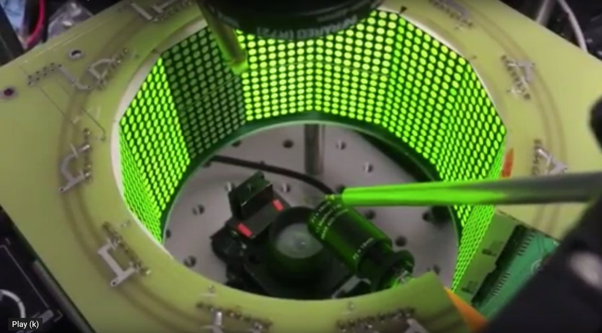

Motor control of locomotion behaviors
Muscles provide the force necessary to generate movements that drive locomotor behaviors. Muscles innervated by single motor neurons comprise synergistic motor units that can be recruited to perform a given task. Drosophila use only a dozen pairs of flight steering motor units to regulate wing motion during both quick maneuvers and slow compensatory reflexes.
Steering muscles can be functionally grouped according to their size and patterns of activity. Small tonically active muscles allow the fly to steer straight via subtle adjustments in the phase of firing relative to wing strokes; large phasically active muscles allow the fly to quickly alter heading via rapid changes in muscle activity. Although the motor neurons and muscles are relatively well characterized, the network of interneurons that controls them is poorly understood.
To begin to address this, I performed a neurogenetic behavior screen of 50 split-GAL4 driver lines and found ~25 that alter aspects of the flight motor program upon optogenetic stimulation. Activation produces a variety of effects on wing amplitude and wingbeat frequency compared to controls, suggesting that dedicated interneuron groups govern specific adjustments to wing motion. Using genetic mosaic analysis to stochastically express the optogenetic effector CsChrimson in select cell classes — with post-hoc analysis of behavior and anatomy — I identify the minimal set of neurons capable of eliciting changes in wing kinematics. This serves as the ‘ground truth’ for matching neurons by light and electron microscopy toward comprehensive connectomic mapping of the flight motor system.

Publications
^Denotes undergraduate mentee · *denotes equal contribution
- 2018 · eLife
Carreira-Rosario A.*, Zarin A.A.*, Clark M.Q.*, Manning L., Fetter R.D., Cardona A., Doe C.Q. A command-like descending neuron that coordinately activates backward and inhibits forward locomotion. eLife. - 2018 · Neural Development
Clark M.Q.*, Zarin A.A.*, Carreira-Rosario A., Doe C.Q. Neural circuits driving larval locomotion in Drosophila. Neural Development 13:6. - 2017 · Neural Development
Hirono K., Kohwi M., Clark M.Q., Heckscher E.S., Doe C.Q. The Hunchback temporal transcription factor establishes, but is not required to maintain, early-born neuronal identity. Neural Development 12(1):1. - 2016 · G3
Clark M.Q., McCumsey S.J.^, Lopez-Darwin S.^, Heckscher E.S., Doe C.Q. Functional genetic screen to identify interneurons governing behaviorally distinct aspects of Drosophila larval motor programs. G3: Genes|Genomes|Genetics 6(7):2023–2031. - 2015 · Neuron
Heckscher E.S., Zarin A.A., Faumont S., Clark M.Q., Manning L., Fushiki A., … Landgraf M. Even-skipped+ interneurons are core components of a sensorimotor circuit that maintains left-right symmetric muscle contraction amplitude. Neuron 88(2):314–329.